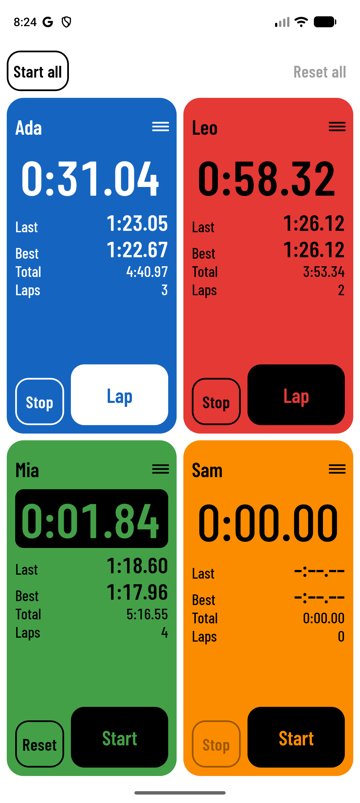
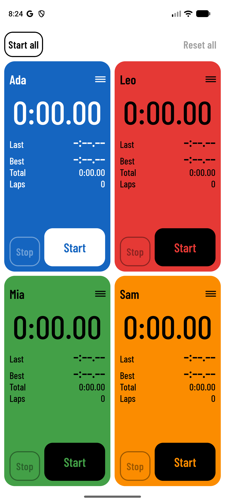
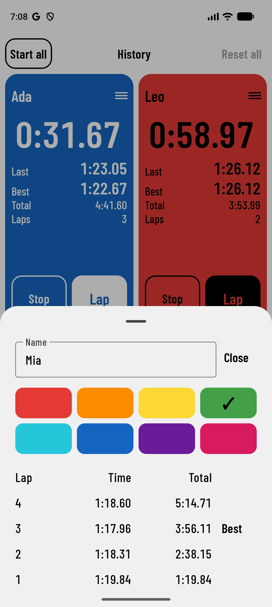
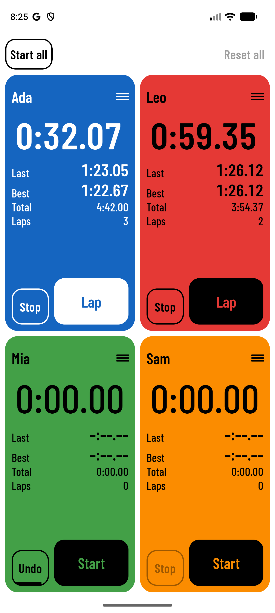
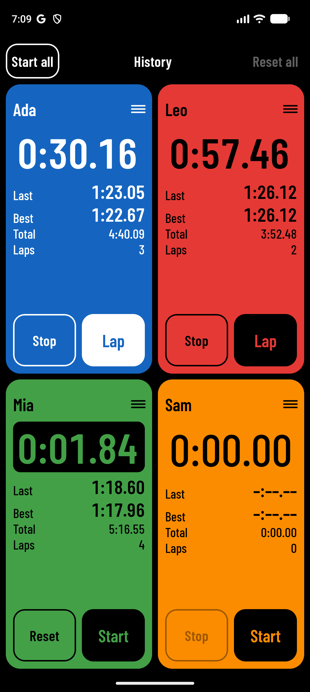
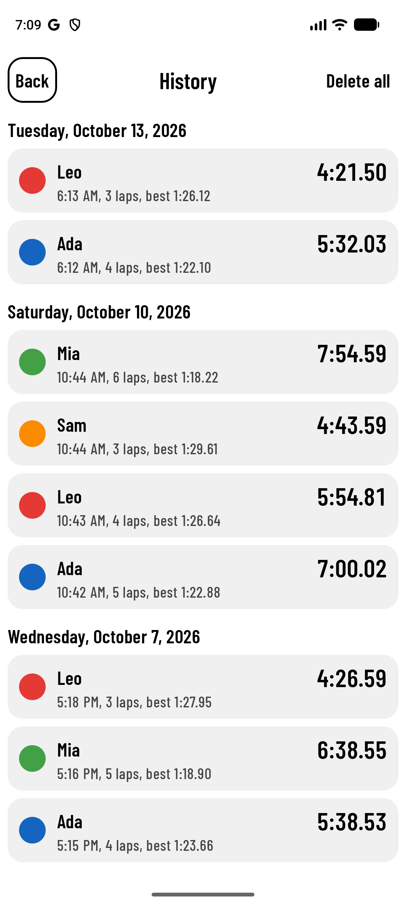
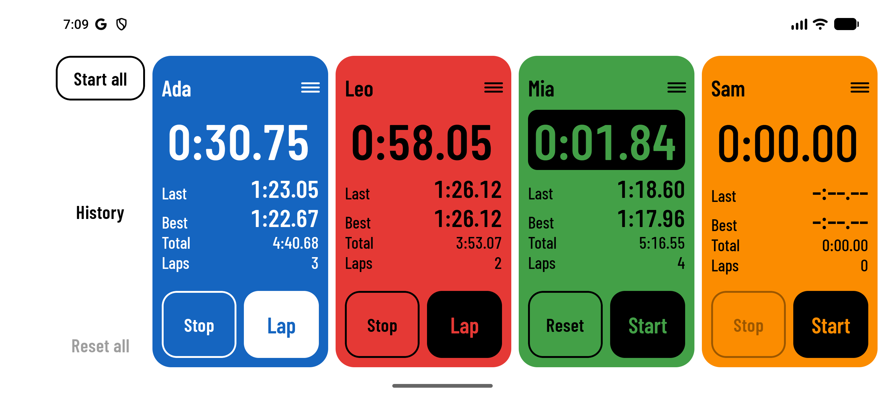

Multi
Laps
Laps
Four stopwatches.
One screen.
Every lap.
One screen.
Every lap.

MultiLaps is a lap timer for the person standing at the trackside with more than one runner to watch. It puts four stopwatches on one screen, each in its runner's colour, so nobody's lap gets missed while you fumble between timers.
| Best for | A parent or volunteer coach timing two to four children by hand at a running track, where the runners set off at different moments and each lap matters to them. Also swimming lengths, cycling laps and school sports days. Not for: races with timing chips, groups larger than four, or anyone who needs results as a spreadsheet. |
|---|---|
| Category | A multi-runner lap stopwatch for Android. People will look for it as "multiple stopwatch" or "lap timer". |
| What people use now |
|
| Why they fall short | They are built for one thing being timed, or for timers you set and walk away from. At the track you are watching children, not a screen, and you have about a second to press the right button for the right child. |
| What is different |
|
| Proof you can state today |
|
For parents and coaches who time several runners by hand, MultiLaps is a lap stopwatch that shows four runners at once, each in their own colour. Unlike the clock app on your phone, it never makes you choose which child to time.
Say what it does in the words a parent at a track would use. The product is simple; the copy should be too.
Four stopwatches. One screen. Every lap.
States the whole product in six words and promises the outcome that matters: no missed laps.
Time all your runners at once.
The plainest version. Use where there is room for only one line.
Two kids. One stopwatch. Sound familiar?
Names the moment the app exists for. Good for a social post, too knowing for a store title.
| 1. Everyone at once | Four stopwatches side by side. Start each runner when they actually set off, or start them all together. |
|---|---|
| 2. Laps without looking | One big Lap button per runner, a different vibration for lap and stop, and each runner's current, last and best lap on their tile. |
| 3. Nothing gets lost | Undo a reset. Lock the screen, take a call, close the app: the timing is still running when you come back. |
Ready to paste. Character counts are against Google Play's limits.
MultiLaps: 4 Lap Stopwatches
Time four runners at once. Big lap buttons, best laps, results kept, no ads.
Two kids on the track and one stopwatch on your phone. You time one of them properly and guess the other.
MultiLaps puts four stopwatches on one screen, so every runner gets their own.
Everyone at once
Four stopwatches, each a solid block of colour with the runner's name on it. Start each one when that runner sets off, or press Start all when they go together. Turn the phone on its side and they line up in a row.
Made for the Lap press
Lap and Stop are two big buttons at the foot of every stopwatch. Lap is solid and Stop is an outline, so you can tell them apart at a glance. Each press gives a short vibration, different for a lap and a stop, so you can keep your eyes on the track. A double press is ignored instead of recording a lap that never happened.
The numbers that matter
Each stopwatch shows the lap in progress in large digits, with the last lap, best lap, total time and lap count beneath. Tap a name to see every lap, with the best one marked.
Hard to lose a time
Reset by mistake? Undo it within five seconds. Screen locked, call came in, app closed? The stopwatches are still running when you come back. The screen stays on while anything is being timed.
Look back later
Reset a stopwatch and its laps are kept in History, by day. Open a result to see every lap. Share one result as text, or pick several and share them together. Results stay on your phone until you delete them.
Yours to set up
Name each stopwatch and pick its colour from eight. They stay as you set them. Light and dark themes follow your phone.
Nothing in the way
No ads. No account. No internet connection: the app cannot go online, and your times stay on your phone unless you choose to share them.
| Category | Sports (second choice: Health & Fitness) |
|---|---|
| Tags to choose | Stopwatch, Running, Sports coaching |
| Search phrases to work in | multiple stopwatch, lap timer, lap stopwatch, track stopwatch, split timer for runners, coach stopwatch, sports day timer |
| What's new, 0.3.2 | History: when you reset a stopwatch, its laps are kept. Look back by day, open a result to see every lap, share one or several as text, and swipe left to delete. Stop is now the same size as Start on every stopwatch. The app is a much smaller download, and runs on Android 6.0 and later. |
Seven store screenshots, in the order to upload them, each with the caption to set above it. All are taken from the app itself on a Pixel emulator, with invented runners.
Captions are set in Barlow Condensed SemiBold, black on white or white on black, above the phone: sentence case, no full stop, no more than eight words. The store versions place each capture on a 1080 × 1920 px canvas with its caption, and are in docs/play-store/screenshots/.
Lead with this one. Two running, one finished, one waiting: the whole idea in a glance.

Names and colours set, nothing started. Start all is at the top left.

Tap a name for the lap list. The name and colour are changed here too.

After a reset the button reads Undo, with a bar that runs down over five seconds.

Follows the phone's light or dark setting. The colours stay the same.

What a stopwatch timed is kept when it is reset. Tap a result for its laps, or to share it.

On its side the four stopwatches line up, with Start all, History and Reset all in a column at the left.
Short blocks for a web page, a flyer for the club noticeboard, or the body of a post. Each leads with what the person gets.
Four stopwatches share the screen. Start each runner when they set off, even if that is ten seconds apart, or press Start all when they go together.
Every stopwatch is a solid block of colour with a name on it. You look for blue, not for a line of small print.
Lap is a big solid button at the foot of each stopwatch. Stop sits beside it as an outline, so a hurried thumb can tell which is which.
One short buzz for a lap, two for a stop. You know the press counted without taking your eyes off the track.
The lap in progress is the biggest thing on the tile. The last lap and the best lap sit right under it, ready for the question every child asks at the line.
A second press too soon is ignored. A reset can be taken back for five seconds, and so can Reset all.
Lock the screen, answer a call or close the app. The stopwatches carry on, and they are right where they should be when you return.
Turn the phone on its side and the stopwatches line up left to right, like lanes.
Give each stopwatch a name and one of eight colours. They are still there next week.
The app asks for one permission, to vibrate. It has no way to go online, so nothing you time leaves your phone unless you share it.
Reset a stopwatch and its laps are kept in History, by day. Open a result for every lap, and share one or several as text.
A layout for the 1024 × 500 px banner Google Play requires, shown at reduced size. The full-size file is in docs/play-store/.
Announcements at three lengths. Each ends with one thing to do: get the app. Add the store link where it says [link].
MultiLaps: four lap stopwatches on one screen, so you can time all your runners at once. [link]
Two kids on the track, one stopwatch on my phone. I got tired of timing one and guessing the other, so I built MultiLaps.
Four stopwatches on one screen, each in its own colour. A big Lap button for every runner. Their current, last and best lap right there, and every result kept for later. No ads, no account.
It is on Android now. Get MultiLaps: [link]
Subject: An app for timing more than one runner
If you have ever stood at the side of a track with two children running and one stopwatch, you know the problem. You time one of them. The other one asks for their lap time and you make something up.
I built MultiLaps to fix that. It shows four stopwatches at once, each a block of colour with a runner's name on it. You start each one when that runner sets off, press their Lap button each time they come round, and the app keeps their current, last and best lap in view.
A few things I cared about because of how it gets used:
It times up to four runners. When you reset a stopwatch, its laps are kept in a history you can look back through and share.
MultiLaps is on Android. Get it here: [link]
| Use | "Get MultiLaps", or "Get it on Google Play", which is Google's own badge wording |
|---|---|
| Avoid | "Download now", "Learn more", "Sign up". There is nothing to sign up for. |
Answers to what people will ask before they install, and the facts to check any copy against.
| Can I time more than four? | No. Four is what fits on a phone screen with buttons big enough to press in a hurry. |
|---|---|
| Do they all have to start together? | No. Each stopwatch starts on its own. Start all is there for when they do go together; it starts every stopwatch that has not been started and leaves the rest alone. |
| What if I press the wrong thing? | A second press within a second is ignored. A reset, or Reset all, can be undone for five seconds. |
| What if my phone locks or the app closes? | The stopwatches keep running. They also carry on through a phone restart, to the nearest the phone's own clock allows. |
| Does it save past sessions? | Yes. When you reset a stopwatch that has at least one lap, what it timed is kept in History, by day, until you delete it. |
| Can I send results to someone? | Yes, as text. Share one result from its page, or press and hold to pick several and share them together, through whichever app you choose. |
| Does it need the internet or an account? | No. The app cannot go online and there is nothing to sign in to. |
| Why does it ask to vibrate? | So you can feel each press. It is the only permission the app asks for. |
| I felt no vibration. | The buzz follows the phone's main vibration switch and its alarm vibration level. It is also silenced by Do Not Disturb when that is set to total silence. |
| Name | MultiLaps |
|---|---|
| Platform | Android 6.0 and later, phones. Tablets get the same layout. |
| Version | 0.3.2 |
| Package | com.swetw.multilaps |
| Stopwatches | Four, each with a name (up to 20 characters) and one of eight colours |
| Times shown | To a hundredth of a second; hours appear past 59:59.99 |
| Permissions | Vibrate. Nothing else; no internet access. |
| Data | Names, colours, timing and history are kept on the phone only. Not backed up, and sent nowhere unless you share a result. |
| Language | English |
| Typeface | Barlow Condensed, under the SIL Open Font License |
| Price | Not decided. Do not print "free" until it is. |
| Publisher name | Not decided. |
What this kit does not settle. The copy is written to be true of the app as it stands; these are the places where a claim needs checking or a piece is still missing.
| 1 | The release build. The first signed build, 0.1.0, has been installed from Google Play and run on one phone. The 0.3.2 build, with History, has been run as a signed, optimised build on emulators only, Android 6.0 among them; its first run on a phone will be in testing. |
| 2 | Sunlight. The contrast is measured, but nobody has yet read the screen at arm's length in sunlight. No line in this kit claims it; do not add one untested. |
| 3 | "Carries on through a restart." Covered by tests only; never tried by restarting a phone mid-timing. The copy says "to the nearest the phone's own clock allows" for that reason. |
| 4 | Android 9 and 10. On those versions a phone with touch feedback off will not vibrate. The listing does not promise otherwise, but a reviewer may notice. |
| 1 | Price. No line in this kit says "free". Add it once decided; it belongs in the short description. |
| 2 | Publisher name and contact email, both required by Google Play. |
| 3 | The package name com.swetw.multilaps is permanent once published. Convention expects you to control swetw.com. |
| 4 | Privacy policy. Written, as PRIVACY.md at the top of the repository. It still needs the publisher name and contact email from decision 2. |
| 1 | Made, in docs/play-store/: the feature graphic at 1024 × 500 px, the store icon at 512 × 512 px, and seven captioned screenshots. |
| 2 | Still to make, optional: a short video. Fifteen seconds of four runners being lapped would show the idea faster than any caption. |